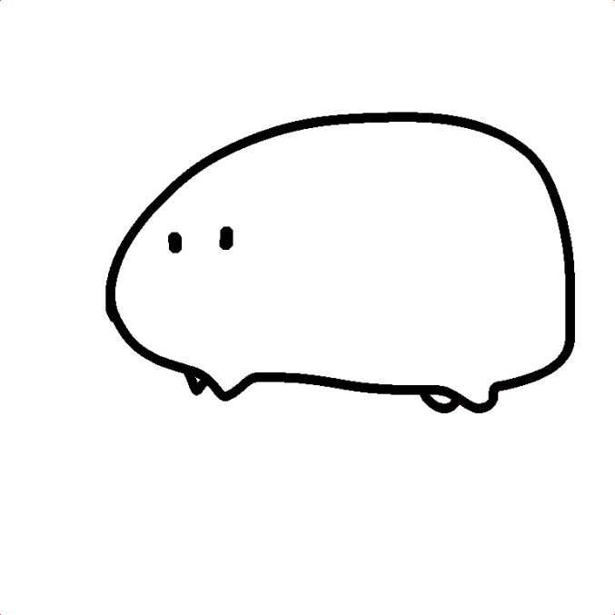

左は2022年12月7日現在のTwitterアイコン、右は2022年9月30日まで使っていたTwitterアイコンです。
単眼です。モノアイとも呼ばれます。なんで単眼なのかと時々訊かれるのでここで答えておきます。
好きでもないものをアイコンにする理由はない。即ち私は単眼が好きだ。ではなぜ好きなのか。それは2017年に遡る。
「おっなんだこのゲーム面白そうだな。」
2017年の夏にりっく☆じあ～すというゲームを始め、それ以来はまって行きました。今でもまだやっています。ゲームの概要としては、地底から出てきた生物（マグマ軍）に国土の殆どを侵略されてしまったので、奪還するという内容です。マグマ軍は現実のソ連軍の兵器の擬人化（？）なのですが、その中のいくつかは単眼です。例えばこちら。
画像は公式サイトより引用[1][2]
左は多連装噴進砲21號、右は少将ということになっています。当時の自分は「おお単眼だ。」程度の反応でした。これが2年半くらい続きます。
話は少し脱線するが、ここまで読んで単眼好きの諸兄はこう思ったかもしれない。
「なぜ単眼が敵なのか！！」しかし安心してほしい。この単眼たちは仲間にすることができる。興味を持ったならば是非お試しあれ。
話を戻し、時は流れて2020年春。「絵の練習でもするか～」と当時の自分が描いたのはなぜか単眼でした。自分でもなぜかわかりません（どうせ「描きやすいから」とか消極的な理由だろう）。その時に描いたのを暫くの間（確か2020年5月～11月）Twitterのアイコンにしていました。
自信がなさすぎるので強めのモザイクをかけています
左が2020年春からTwitterのアイコンに設定していたもの、右がその後3ヶ月ほどの間Twitterのアイコンにしていたものです。前から私を知っている人は見たこともあるでしょう（そうは言ってもモザイクがかかってたらわかんないか）。
単眼志向に話を戻すと、自分で描き始めたあたりから単眼に対する好意が湧き始めていました。2021年に入るとTwitterで単眼絵師をフォローしたり、pixivで単眼を検索したりといよいよ単眼好きを深めて行きました。
自信が少ないので軽くモザイクをかけています
上の画像とその改良版（冒頭の右の画像）を1年ほどアイコンに設定し、「自分は単眼の人である」という自己認識を強め、今に至ります。
まとめ
始まりはとあるゲームでした。それが自分の中で煮詰まっていった結果が今です（推しは別のキャラクターなのに）。単眼にはまるきっかけになったり、他作品を含めた最も好きなキャラクターがいたりと、自分の人生に大きな影響を与えた作品と言えるでしょう。
蛇足
Twitterアイコン画像の変遷（2020年5月～2022年12月）
2020年5月～2020年11月
2020年11月～2021年2月
2021年2月～2021年3月
2021年3月～2021年6月
2021年6月～2021年9月
2021年9月～2021年10月
2021年10月～2022年2月
RTX ON
2022年2月～2022年9月
2022年10月～
蛇足2
全てのアイコンに写りこんだこいつを見つけられたかな？
参考文献
更新履歴
- 2022/12/19
- 加筆
- 2022/12/7
- 記事作成